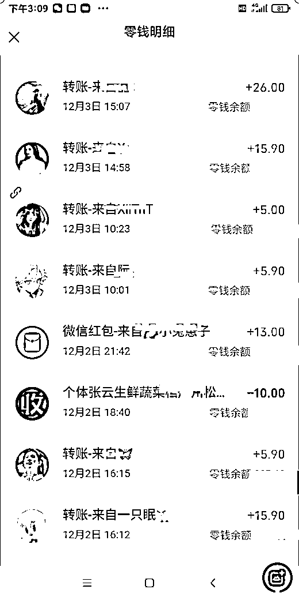
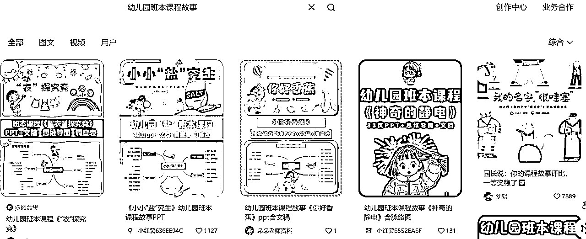
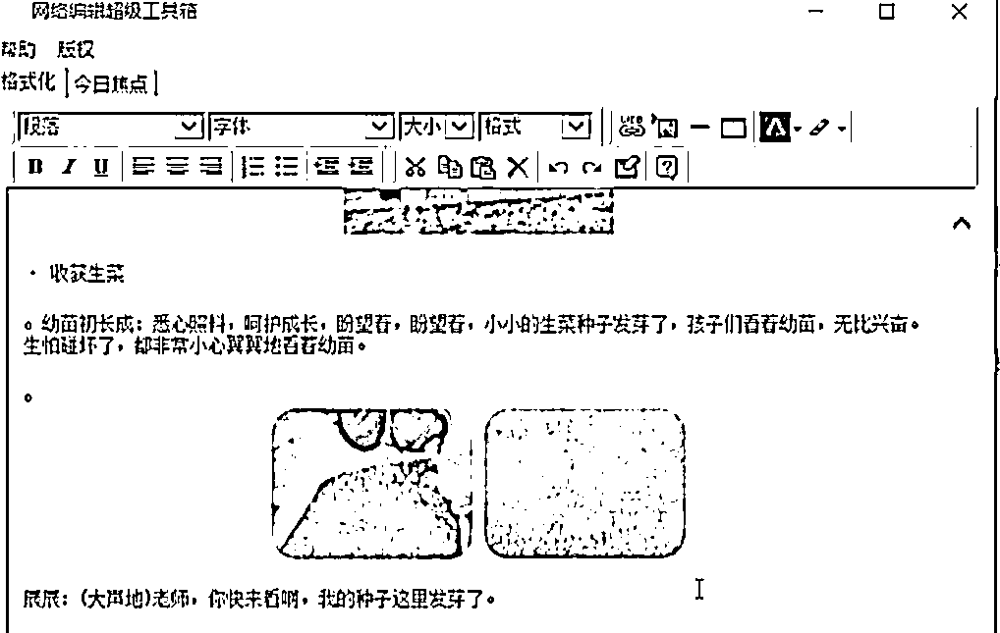
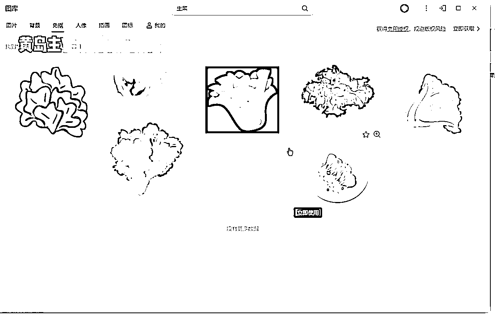

来源：https://o0yvn3o31a.feishu.cn/docx/FYlvdG3DkoNNDexqcJFcRJrsn9f
今天分享的项目是幼教班本PPT赛道的变现玩法，主要在小红书上做私域变现，单价基本上都是单个PPT15-20左右，定制价格高一些30-50这样！那么，这个项目相对于大家来说比较蓝海小众化一些，因为这个是幼儿教育领域里的一个细分化赛道，星球里也有少许圈友在做这个项目。包括我们也是一样，刚从这个赛道里杀出一条血路来。很痛苦，就像带着痛苦面具一样！
为什么这么说？因为这个赛道跟其他PPT模板有很大的不同，不同的点就是需要人工原创PPT模板，你还不用人家做好的班本PPT模板，因为随时都能被原作者投诉，也就是说这个赛道的PPT模板压根就没有非原创的。所以，你想发展这个赛道，就必须默默承受着每天的寂寞.....下面是案例！
我们一开始纠结了很久才做这个班本赛道的，我让团队去做也是思前想后，因为我深知原创的玩法才能更长久才能不内卷，所以我纠结了1个月后才开始安排员工去做的，总共3个员工去做，就剩下1个员工坚持到现在，每天私域能出个四五单、五六单这样，然后就是接一些定制的活，这个定制是可以溢价的，也是整个项目里变现最多的那个部分。你可以理解成：单卖能卖多少，团购才是大单！
员工自述：
一次定制多个班本PPT：
部分私域出单情况：

备注：我这虽然拿到结果了，但是其他同行基本上都每天100-200甚至1000+，因为他们做的时间比我们久
小红书笔记的数据越来越好：
说真的，考验你执行力到了，这个项目是个很好的项目，但你的执行力如何就得看能不能禁得住考验， 如果你真想做我分享的这个赛道的话！
好，来给大家具体介绍下班本PPT赛道：
1、什么时候是班本PPT
一句话去概括：班本 PPT 是基于班级自身特色、围绕班级相关主题（如文化建设、活动展示、管理汇报、学科学习等）用于展示、汇报、辅助教学等目的而制作的演示文稿，主要是方便幼儿园老师给学生演讲PPT！
另外，班本分为小班、中班、大班，建议先做其中一个班，然后在放大！
2、小红书上的班本PPT笔记展现形式

从图上可以看到，上面是PPT，下面是思维图，这就是PPT结合思维图合成体，而且页数多，一般买班本PPT的不会找页数低于30的，所以这也在原创上非常痛苦，哈哈！
3、针对人群有哪些
主要针对的是幼儿园老师，老师太懒了都不想自己制作班本PPT，或者没时间制作只能通过第三方平台购买制作好的去教学使用。
4、流量获取方式
班本PPT获取流量的方式都是靠小红书长尾词搜素，也就是幼师会通过一些关键词的搜索找到相关文件从而加微信询单，基本上需要我们前期铺垫笔记，后期被动搜索以及变现！
我们举个例子：比如这个“衣探究竟”，一搜一堆，基本上老师都懂这个，所以会去搜索或定制
以上简单的跟大家说明了下班本PPT赛道，下面我们详细说下玩法：
我们这次分享的内容分为这几个部分：账号注册、操作流程、变现方式等。如果你感兴趣这个赛道，你看完这篇文章就可以自己去上手操作了，只要有执行力基本上都可以！
小红书注册还是很简单的，有手机号和手机设备就可以去注册，流程包含这些：
1、手机里下载小红书APP
2、选择手机号登录
3、输入手机号，获取验证码，勾选已阅读并同意
4、然后点击登录
这里不详细说明了，但是有几个注册要点，我简单说下：
1、一机一号一ip：单独一台手机，一张手机卡，用流量注册哈，需要流量卡渠道也可以找我推。只要你保证注册的是新号就行了。
2、注册时，生日选择大概1个月内的。因为小红书生日当天会发一张生日流量券，有效期半个月，这个到时候有利于发笔记的时候使用！
3、小红书注册需要选择年龄：20出头就行了；爱好什么的，随便选就行了。
4、先不用修改小红书名字，也不写简介。建议养完号以及发了3篇笔记后，再改名字和写简介，不要一上来就改哈。你去点赞同行的笔记，容易被同行拉黑。
5、我是建议大家新开账号，或者把老账号注销掉变成新账号，不要用发过其他内容的老账号来做这个项目。
第一点：老账号如果长期发一个领域的内容，标签已经定死了，换个赛道不容易热门
第二点：你的老账号可能长期没发布，账号权重流失严重，再发就不热门了
所以：空白新号，你从0-1去做会更顺畅，不会有那么多的烦心事
关于养号，没什么难的，我们的方法就是搜相关合同的关键词，比如幼儿园班本，搜完去看相关内容，然后刷账号的活跃度。一定不要去纠结什么养号方法、什么七天螺旋、什么养多少天，养好或养不好等。基本上按照我说的养号建议，发布第一批笔记小眼睛都在100+以上。
然后下拉框自动出来相关长尾词，然后你可以点下拉框也可以手动去搜索，去看别人的笔记，然后开始养号，直到推荐页面有相关内容就行了。
下面是我们正在做的养号方案也很简单，基本上满足大家的养号需求：
第一天：注册账号要用流量，注册完当天不要动
第二天：开始养号，每天刷领域垂直笔记，刷30分钟，分时段刷
第三天—第五天，保持养号，适量点赞收藏评论
第五天：改包装，人设要打造好，上午刷笔记，下午发一篇笔记测流量，然后继续刷视频互动，点赞、评论、转发。
如果如果你这个合同模板领域的干货笔记，当天过100小眼睛，账号基本就是没问题的，然后可以继续正常发布了！
当然了，我们有时候也不养号，就是注册完直接发布笔记，因为有适合我觉得养不养发完都是一样的效果，但是我建议大家可以边养号边发笔记，这样至少账号是有活跃的。如果只发笔记，不去看其他人笔记，不去活动账号的话，平台会检测出账号活跃度低，大概是这样的情况！
关于设置资料，基本上参考同行的：
你可以去看同行是怎么设置昵称、简介、头像的。我们可以可以用卡通图片，真人照或者风景图片，昵称随便写，没什么特定的要求，个人简介借鉴一下对标账号，账号注册完成以及养号完成后，就开始开店和做笔记内容。
小的总结：整体的流程是准备手机、小红书账号、成年实名，然后养号，提⾼账号权重，选择赛道，起号。然后就可以持续发展下去！
常见的主题我说下，有各种水果类的，比如瓜果蔬菜，有春夏秋冬季节，比如夏天、冬天、春天、秋天，也有每个月的节日，比如清明节，劳动节，端午节，教师节，母亲节等
如果不知道怎么找主题，想不出来，利用关键词去搜：
比如：春天的时候去微信搜一搜，搜“春班本”，“夏班本”，比如现在第二学期，大班读完就上小学了，涉及幼小衔接，去搜“幼小衔接班本”，会看到很多春天、夏天之类的，但是认真找会看到“花”，"果“，”野菜“，”西瓜“，”水“，”时间“，“姓氏”等等相关班本推荐出来主。
只要题选对，即使PPT丑，只要有人需要这个主题就卖的出去，客户需要才是最重要的。
也可以小红书搜索幼儿园班本、幼儿园班本课程、幼儿园班本课程小班、幼儿园班本课程中班、幼儿园班本课程大班、课程故事会出来很多主题，搜索页中最上面有很多近期搜索比较多的相关词汇，看爆品，泥、吃饭、瓶子都代表着幼儿园需求，这种属于通用爆品主题。
做的只要不丑，质量可以，短期没有巨大收益，但是长期每个月都能出单，什么季节都通用，在赶时令主题的同时，做一下爆款的主题。
搜索这些，可以看到别人正在发的班本PPT笔记，打开笔记看下时间，如果是最近1-2天的就可以，然后就可以知道你每天要去做哪些题材
素材找到之后，要先确定这个号班本制作的结构：课程缘起+课程目录+课程脉络图+课程实施+课程反思
下面详细的说明下：
1、课程缘起
这个意思就是课程怎么产生的！比如要写关于蜗牛的班本课程，课程缘起要确定主题是蜗牛
比如：在一次户外资源探索时，一只缓慢爬行的蜗牛引起孩子们的注意，大家对这只蜗牛展现出了极大的兴趣，于是孩子们开始关于蜗牛的讨论，讨论内容都是围绕蜗牛展开写的，这部分写的是怎样引起主题的产生。
2、课程脉络图
就是思维导图哈，也就是活动开展完之后最终的脉络图，找到的素材有预设和实际图，不然只做思维导图就行。
课程实施这块不是太难，我举个例子，比如写关于生菜的班本，最开始是认识生菜，看一下，闻一下，摸一下，到第二部分可以写深入了解，比如种植，或者直接拿生菜观察，不能先写拿来煮吃，后面才开始闻、摸之类，所以这部分只需要理清逻辑去写就行，内容直接拿公众号文章里面的素材填进去。
这个就是教师的思考环节，也是总结活动的过程。比如能给孩子带来了什么收获，孩子从中学到了什么，给老师带来了什么收获，类似工作写复盘总结。
总结了下，写班本顺序是：确定主题→确定主题重心→用主题搜索素材→做思维导图→根据思维导图写文档→将文档做成PPT。
思维导图制作可以用别人的，也可以自己做，思维导图是整个班本框架内容，要有一定的逻辑性，不要自己想，找素材参考别人，再做出自己的，制作思维导图，标题就是主题，模仿同行，看公众号文章，别人的标题是什么，直接借鉴模仿。
大概长这样，大家基本上都是做的这样：
思维导图制作的具体方法：
1、首先电脑上鼠标右键，新建PPT，打开之后先点击添加一张图片，点击这里有个思维导图，点击一下，有很多思维导图需要开通超级会员才能用，可以去闲鱼、淘宝开通几天的试用，随便找一个，颜色比较亮丽的，不要找黑白的，点击立即使用。
2、然后进行整改，先打开微信搜一搜，去找对标的班本
比如要做生菜主题的，要找半年左右的，先确定一下主题，看一下公众号文章里面别人的主题是什么，
比如生菜总动员、你好生菜、遇见生菜、嗨生菜、我和生菜有个约会，“生菜”有道，名字都很好听，
如果是大班的话可以选择生菜有道，如果是小班的话，可以找小班小朋友能理解的标题，然后再对思维导图进行填充，从左至右往里填充。
建议多找几个筛选，文章包括课程的缘起，生菜大讨论，生菜大调查，种植过程，收获生菜，依次填入到思维导图里面，先把大概的内容写出来，之后再去具体的填充细节，课程缘起基本上都差不多，随便用哪个都可以，生菜大调查，生菜初体验，种植过程可以写认识种子，拔草松土，播撒种子，采摘生菜，生菜沙拉，生菜美食，小小厨师。
一定要多参考几个文章，填充完之后把多余的思维导图分支删掉就可以了，思维导图制作好之后，点击确定，把PPT保存一下。
将思维导图转成文稿，把大纲目录内容填充完整，整理文稿，教师小结可写可不写，看一下这些案例。参考3-6岁儿童发展指南里的内容去修改就可以。
打开PPT，双击点开之后，在左上角文件里面有导出另存为，点word大纲文件去导出，如果没有开会员的也可以直接挨个复制，去淘宝、闲鱼去买几天的试用也可以，点击导出。
保存之后打开文档大纲，先加一个课程缘起进去，打开公众号去看一下多找一些同行，找到你喜欢的，合适的内容，复制内容到文章编辑器里面格式化一下，有对话的话不好复制，可以直接输入进去。
备注：下面是软件，我送大家
然后把格式好的文字放到大纲里面，然后把小朋友的对话放进去，接下来孩子们展开了今天的讨论，根据孩子们投票的结果，决定种生菜，然后把图片截图放进去，图片是为了丰富班本内容用的，后期大家把班本发给用户的时候，用户需要替换自己幼儿园图片的，他是不会用到我们图片的，如果有人头像的话给他打上马赛克。
下一部是分生菜初见，首先是生菜的种类有哪些，有图片直接截图，没图片去百度里面找，没有水印的就可以直接复制，有水印的话就截图，后面操作熟练之后，文档这步都可以省略，可以直接去PPT里面操作，根据大纲内容，依次去找文章和图片，填充进去，有人脸的，截图的时候直接打上马赛克再用，防止后期被投诉侵权，后面的内容依次填充进去。

老师的总结写在最后，可以结合几篇文章的内容，每篇找出一句放到一起就可以了，课程大概流程就差不多了。
文档弄好之后，全选复制到编辑器里面格式化一下，看起来会更加的顺畅，整体去调一下，字体、大小全部统一，整篇文章就做好了，多参考几个同行去改，文档制作完之后先保存一下。
看一下改好的整体文档案例：
首先打开修改完的文档，修改文档一共分为六个，桌面上新建PPT，打开之后添加第一张图片，插入里有图片，wps office里面有很多图片，点击背景，里面有很多，扁平几何、卡通小清新都可以用。
可以多去参考同行是怎么操作，看一下微信里面的同行，比较简单，就是一张白底图上面放几个生菜的贴画。
我们也可以先找背景图，右键设为背景，把图片删掉，输入遇见生菜，可以改个字体，行间距调一下，喜欢用哪个就用哪个。
下面写上制作人，如果大家不想用自带图片的话，也可以去千图网里找一些插画，有免扣元素，去搜索贴画，下载放到PPT里也可以，格式调成JPG。
或者在PPT里面找，点击插入，图片，更多图片里面，图标里面有插画，免扣都可以去找，点击这里面去搜索生菜，有很多，找一个喜欢的用，可以稍微旋转一下，调整大小放到合适的位置，可以多放两个，看自己的需求，上面再添加幼儿园班本课程故事的字样。

然后做目录页，把主图复制粘贴出来，点击插入，形状，找一个形状插入进去，颜色一定要跟主题契合，不要调的太花哨了，跟主题不契合就不好看，在这里面输入文字，也就是目录。
继续添加文字，选择插入，文本框，横向或者竖向都可以，随便选一个，输入课程起源，文字加大，字体自己去调，
形状调一下，倒影，阴影，发光也可以调，想用哪个就直接调就行，颜色调淡一点，大小和属性自己调整。
把这个页面多复制几个出来，以此输入达到标题，生菜初见，种植过程，生菜美食，趣玩生菜，课程总结，大概就这几个，依次调整一下。
然后再复制一个粘贴出来，插入对话框，把文字调整一下，可以再插入一个小朋友的图标进去，在这里搜索小朋友，插入，图片，更多图片，图标，输入小朋友头像，会出来很多，喜欢哪个直接用就可以，这就是课程起源。
下一页是小朋友讨论的对话，用对话框的形式，点击插入，智能图形，找一个合适的放进去，或者也可以自己去插插入图片，点插入，形状自己选，轮廓，颜色调一下。
在里面依次输入小朋友的对话，颜色调成黑色，用字体颜色调大一点，添加插入图标，图标里面去找就行了，颜色，形状根据自己喜欢的去调就行，线条也调一下，喜欢哪个就用哪个，老师说话就要找一个看起来比较像老师的人物插画，调整一下位置，文字最好都对齐，显得不会太突兀。
对话框做完了接下来是展开了激烈的讨论，孩子们投票，把文字和图片都粘贴进去，调整大小，图片可以调一下效果，点效果，有柔化边缘，可以适当的点一下，边缘就稍微好看一点，可调可不调，字体也可以自己去调，喜欢哪个用哪个就行了。
然后下一个生菜初见，复制一下上面的PPT，先把原本的内容删掉，新建一个，插入文本框，生菜种类，可以给他调大，换个颜色，有很多字体样式都可以选，这里我们可以插入一个文本框，输入文字，下面把生菜的图片放上去。
然后下一个生长条件，PPT再复制粘贴一个出来，在上面输入生长条件的文字个图片，边框大小根据文字大小去调。
下一个营养价值，再依次输入文字和对应的图片，甜滋滋位置，然后是种植过程，边框不需要的就可以删，把文字提出来，重新放一个图形文本框，输入小朋友的对话，再插入人物插画进去，颜色，线条调一下，字体颜色自己去调喜欢的。
下一个拔草松土，其实整体内容很简单，就是图片加文字，再配上一些插画就可以了，图片后期发给用户，用户需要拍摄自己幼儿园的小朋友照片上去，所以图片无所谓。
PPT做好之后把思维导图放进去，放到第一张图的后面，课程缘起的前面，可以复制重复粘贴，调到适当的位置和大小，把线条，效果，颜色调一下，整体看下，没有问题就可以保存了。
制作很简单，上面的大家可以学习操作看看，那制作就先讲到这里了！
发布时间的话，就上午、下午各一个
幼儿园班本课程故事《“瓶子”里的时间》含思维导图
幼儿园班本课程《“瓶子”里的时间》含思维导图
幼儿园班本课程《“瓶子”里的时间》含PPT文稿
有小班、中班、大班，看你做的是哪个班
格式如下：幼儿园班本课程+PPT名字+含概什么
注意几个细节：
1、标题要参考同行标题为主
2、是哪个班就写哪个班，可以不用在标题体现，可以在主图上体现班级
3、是什么PPT名字就写什么名字，不要自己瞎编
4、含概什么就写什么，比如含脉络图、含思维导图、含稿
多参考同行的标题：看对标账号，标题格式可以统一
幼儿园班本课程故事《“瓶子”里的时间》含思维导图
主题：“瓶子”里的时间
适合：幼儿园大中小班班本课程故事活动
28页ppt，调查表，原文稿，思维导图（脉络图）
可编辑，可修改
✅课程缘起
✅课程目标
✅课程脉络图
✅课程实施（每小板块都有教师小结）
✅课程反思
注意：可以多参考同行，这个看对标账号就行了，账号可以自己找几个做的不错的，跟风即可
直接参考同行的，复制自己用就行了
发完之后看下能否投薯条、2个小时后搜索标题是否可以搜到，是被收录，我们主要是让收录就行，后期要做被动搜索的。
注意：小眼睛几十到100+都是正常，我们做的是收录，只要内容是原创的，正常发就行了
注意：发完之后，不要点赞、评论、收藏，让笔记自然发育就行了
直接私信引流就行了，这个很简单哈，也就是发布的笔记有人评论的话，就让用户私我们，然后把带有微信号的图片发给用户，看到的都知道是什么，直接引流到私域变现就可以。下面是我做的简单加微信的图，这个我经常用的。
一定要注意：不要在评论里提及“私信，私聊，加v，微信”等字眼，如果有人回复你的评论可以回复“厚台思，宝子思我”等谐音字，后台私信，千万不要直接说加微信，也不要提及v，直接发图片过去。
基本上我们就是在朋友圈发一些日常生活内容，穿插班本发，也可以不发，做一个目录价格表，有客户需要就可以直接发图片给他，可以单独购买，也可以加入会员打包购买。
差不多这些吧，按照我写的这个SOP可以完美的去操作这个项目，如果你感兴趣可以看完就去实操，做出效果也可以找我反馈的，好了，有问题可以一起交流哈！
注意：未经授权，禁止转载到各大平台，需要授权，找黄岛主即可！